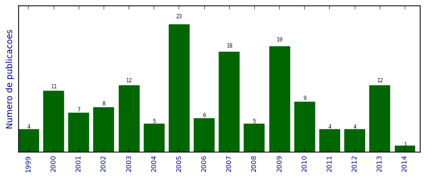

UFSM - Análise do Lattes
Artigos completos publicados em periódicos

Número total de itens: 148
(A1: 0, A2: 2, B1: 7, B2: 5, B3: 22, B4: 3, B5: 4, C: 48, Qualis não identificado: 57)
Legenda Qualis:
- Publicação para a qual o nome exato do Qualis foi identificado: Qualis <estrato>
- Publicação para a qual um nome similar (não exato) do Qualis foi identificado: Qualis <estrato> (nome similar)
- Publicação para a qual nenhum nome do Qualis foi identificado: Qualis não identificado (nome usado na busca)
2014
| 1. | ACEVEDO, Otávio C. ; COSTA, FELIPE D. ; OLIVEIRA, PABLO E. S. ; PUHALES, FRANCIANO S. ; Degrazia, Gervásio A. ; ROBERTI, DÉBORA R.. The Influence of Submeso Processes on Stable Boundary Layer Similarity Relationships. Journal of the Atmospheric Sciences. v. 71, p. 207-225, 2014.  [ citações Google Scholar | citações Microsoft Acadêmico | busca Google ] Qualis: B1 |
2013
| 1. | ANFOSSI, Domenico ; MALDANER, S. ; MORTARINI, L. ; RIZZA, Umberto ; DEGRAZIA, G. LARGE - EDDY SIMULATION IN LOW WIND CONDITIONS. REVISTA DE CIÊNCIAS EXATAS E NATURAIS. v. esp., p. 446-449, 2013. [ citações Google Scholar | citações Microsoft Acadêmico | busca Google ] Qualis: C |
| 2. | MALDANER, S. ; MALDANER, S. ; RIZZA, U. ; DEGRAZIA, Gervasio Annes ; SEMPREVIVA, A. M. ; RUBERT, J.. ANALYSIS OF OFFSHORE WIND FLOW: LARGE-EDDY SIMULATION AND SEA OBSERVATIONAL DATA. Ciência e Natura. v. esp., p. 435-438, 2013. [ citações Google Scholar | citações Microsoft Acadêmico | busca Google ] Qualis: C |
| 3. | Maldaner, Silvana ; DEGRAZIA, Gervasio Annes ; RIZZA, Umberto ; MOREIRA, VIRNEI SILVA ; Puhales, Franciano Scremin ; ACEVEDO, OTAVIO COSTA ; ALVES, IVAN ; DA COSTA CARVALHO, JONAS. Derivation of third-order vertical velocity turbulence moment in the convective boundary layer from large eddy simulation data: an application to the dispersion modeling. Atmospheric Pollution Research. v. 4, p. 191-198, 2013. [ citações Google Scholar | citações Microsoft Acadêmico | busca Google ] Qualis: C |
| 4. | MOREIRA, V. S. ; Degrazia, G. ; TIMM, A. U. ; ROBERTI, D. R. ; MALDANER, S.. Connecting Turbulence and Meandering Parameterization to Describe Passive Scalars Dispersion in Low Wind Speed Conditions. ISRN Atmospheric Sciences. v. 2013, p. 1-8, 2013. [ citações Google Scholar | citações Microsoft Acadêmico | busca Google ] Qualis: C |
| 5. | Puhales, Franciano Scremin ; RIZZA, Umberto ; Degrazia, Gervásio Annes ; Acevedo, Otávio Costa. A simple parameterization for the turbulent kinetic energy transport terms in the convective boundary layer derived from large eddy simulation. Physica. A (Print). v. 392, p. 583-595, 2013. [ citações Google Scholar | citações Microsoft Acadêmico | busca Google ] Qualis: B3 |
| 6. | RIZZA, U. ; MIGLIETTA, M. M. ; Puhales, F. S. ; MALDANER, S. ; MALDANER, S. ; DEGRAZIA, Gervasio Annes. INVESTIGATION WITH LARGE-EDDY SIMULATION OF THE SEA BREEZE REGIMES. Ciência e Natura. v. esp., p. 229-222, 2013. [ citações Google Scholar | citações Microsoft Acadêmico | busca Google ] Qualis: C |
| 7. | RIZZA, U. ; MIGLIETTA, M.M. ; Degrazia, G.A. ; Acevedo, O.C. ; MARQUES FILHO, E.P.. Sunset decay of the convective turbulence with large-Eddy simulation under realistic conditions. Physica. A (Print). v. 392, p. 4481-4490, 2013. [ citações Google Scholar | citações Microsoft Acadêmico | busca Google ] Qualis: B3 |
| 8. | RIZZA, Umberto ; MIGLIETTA, MARIO M. ; ACEVEDO, Otávio C. ; ANABOR, VAGNER ; DEGRAZIA, GERVASIO A. ; GOULART, Antonio G. ; ZIMMERMAN, HANS R.. Large-eddy simulation of the planetary boundary layer under baroclinic conditions during daytime and sunset turbulence. Meteorological Applications (Print). v. 20, p. 56-71, 2013. [ citações Google Scholar | citações Microsoft Acadêmico | busca Google ] Qualis: B3 |
| 9. | ROBERTI, Debora R ; ANFOSSSI, D. ; Campos Velho, H. F. ; Degrazia, Gervásio A.. Entropic Approach for Emission Rate Estimation of Area Pollutant Sources. American Journal of Environmental Engineering. v. 3, p. 56-62, 2013. [ citações Google Scholar | citações Microsoft Acadêmico | busca Google ] Qualis: B4 |
| 10. | TEICHRIEB, CLAUDIO A. ; ACEVEDO, Otávio C. ; Degrazia, Gervásio A. ; MORAES, Osvaldo L.l. ; ROBERTI, DÉBORA R. ; ZIMERMANN, HANS R. ; SANTOS, DANIEL M. ; ALVES, RITA C.M.. Characterizing the relative role of low-frequency and turbulent processes in the nocturnal boundary layer through the analysis of two-point correlations of the wind components. Physica. A (Print). v. 392, p. 1510-1521, 2013. [ citações Google Scholar | citações Microsoft Acadêmico | busca Google ] Qualis: B3 |
| 11. | TIRABASSI, Tiziano ; VILHENA, MARCO TÚLLIO ; BUSKE, DANIELA ; Degrazia, Gervásio Annes. An Analytical Air Pollution Model with Time Dependent Eddy Diffusivity. Journal of Environmental Protection (Print). v. 04, p. 16-23, 2013. [ citações Google Scholar | citações Microsoft Acadêmico | busca Google ] Qualis: B5 |
| 12. | XAVIER, M. B. ; ROLIM, S. B. A. ; Degrazia, G. A. ; MOOR, L.. Analysis of Remote Surface Temperature of a Coastal Lagoon in Southern Brazil during the Passage of Frontal Systems. American Journal of Environmental Engineering. v. 3, p. 107-114, 2013. [ citações Google Scholar | citações Microsoft Acadêmico | busca Google ] Qualis: B4 |
2012
| 1. | ACEVEDO, Otávio C. ; COSTA, FELIPE D. ; Degrazia, Gervásio A.. The Coupling State of an Idealized Stable Boundary Layer. Boundary-Layer Meteorology (Dordrecht. Online). v. 145, p. 211-228, 2012. [ citações Google Scholar | citações Microsoft Acadêmico | busca Google ] Qualis: C (Boundary Layer Meteorology (Dordrecht. Online)) |
| 2. | Alves, I.P. ; Alves, I.P. ; Degrazia, G.A. ; BUSKE, D. ; VILHENA, M. T. ; Moraes, O.L.L. ; BUSKE, D. ; Degrazia, G.A. ; Vilhena, M.T. ; ACEVEDO, Otávio C.. Derivation of an eddy diffusivity coefficient on source distance for a shear dominated planetary boundary layer. Physica. A (Print). v. 1, p. 1-10, 2012. [ citações Google Scholar | citações Microsoft Acadêmico | busca Google ] Qualis: B3 |
| 3. | Degrazia, G.A. ; RIZZA, U. ; Puhales, F.S. ; Welter, G.S. ; Acevedo, O.C. ; MALDANER, S.. Employing Taylor and Heisenberg subfilter viscosities to simulate turbulent statistics in LES models. Physica. A (Print). v. 391, p. 1020-1031, 2012. [ citações Google Scholar | citações Microsoft Acadêmico | busca Google ] Qualis: B3 |
| 4. | Vilhena, M.T. ; BUSKE, D. ; Degrazia, G.A. ; Quadros, R.S.. An analytical model with temporal variable eddy diffusivity applied to contaminant dispersion in the atmospheric boundary layer. Physica. A (Print). v. 391, p. 2576-2584, 2012. [ citações Google Scholar | citações Microsoft Acadêmico | busca Google ] Qualis: B3 |
2011
| 1. | ANABOR, V. ; RIZZA, U. ; Nascimento, E. L. ; Degrazia, G. A.. Large-Eddy Simulation of a microburst. Atmospheric Chemistry and Physics (Online). v. 11, p. 9323-9331, 2011. [ citações Google Scholar | citações Microsoft Acadêmico | busca Google ] Qualis: A2 |
| 2. | COSTA, F. D. ; ACEVEDO, Otavio ; DEGRAZIA, G. A Simplified Model for Intermittent Turbulence in the Nocturnal Boundary Layer. Journal of the Atmospheric Sciences. v. 68, p. 1714-1729, 2011. [ citações Google Scholar | citações Microsoft Acadêmico | busca Google ] Qualis: B1 |
| 3. | Kipper, C. ; DEGRAZIA, G. Theoretical Study of the Decaying Convective Turbulence in a She ar- Buoyancy PBL. Physica. A (Print). v. 390, p. 3320-3328, 2011. [ citações Google Scholar | citações Microsoft Acadêmico | busca Google ] Qualis: B3 |
| 4. | MOREIRA, V. S. ; Degrazia, Gervásio Annes ; ROBERTI, D. ; Timm, Andréa Ucker ; CARVALHO, J.. Employing a Lagrangian stochastic dispersion model and classical diffusion experiments to evaluate two turbulence parameterization schemes. Atmospheric Pollution Research. v. 2, p. 384-393, 2011. [ citações Google Scholar | citações Microsoft Acadêmico | busca Google ] Qualis: C |
2010
| 1. | ACEVEDO, O. ; DEGRAZIA, G ; PEZZI, ; SOUZA, R. B. ; ANABOR, V.. Atmospheric boundary layer adjustment to the synoptic cycle at the Brazil‐Malvinas Confluence, South Atlantic Ocean. Journal of Geophysical Research. v. 115, p. 1-12, 2010. [ citações Google Scholar | citações Microsoft Acadêmico | busca Google ] Qualis: B2 |
| 2. | ANABOR, V. ; RIZZA, U. ; Degrazia, G. A. ; de Lima Nascimento, E. ; DEGRAZIA, G. Numerical modelling of microburst with Large-Eddy Simulation. Atmospheric Chemistry and Physics Discussion (Online). v. 10, p. 24345-24370, 2010. [ citações Google Scholar | citações Microsoft Acadêmico | busca Google ] Qualis: C |
| 3. | ANFOSSSI, D. ; TINARELLI, G. ; CASTELLI, S. T. ; FERRERO, E. ; OETTL, D ; Degrazia, G.. well mixed condition verification in windy and low wind spedd condictions. International Journal of Environment and Pollution. v. 40, p. 49-61, 2010. [ citações Google Scholar | citações Microsoft Acadêmico | busca Google ] Qualis: B5 |
| 4. | BULIGON, L ; DEGRAZIA, G ; ACEVEDO, O C ; SZINVELSKI, Charles ; GOULART, A. A semi-analytical solution for the mean wind profile in the Atmospheric Boundary Layer: the convective case. Atmospheric Chemistry and Physics (Print). v. 10, p. 2227-2236, 2010. [ citações Google Scholar | citações Microsoft Acadêmico | busca Google ] Qualis: A2 |
| 5. | CARVALHO, J. C. ; DEGRAZIA, G ; ANFOSSI, D ; GOULART, A ; Mortarini, Luca. Simulating the characteristic patterns of the dispersion during sunset PBL. Atmospheric Research (Print). v. 98, p. 274-284, 2010. [ citações Google Scholar | citações Microsoft Acadêmico | busca Google ] Qualis: B2 |
| 6. | Degrazia, Gervásio A. ; ACEVEDO, Otávio C. ; CARVALHO, Jonas C. ; Maldaner, Silvana ; Gonçalves, Juliana Bittencourt ; RIZZA, Umberto. Autocorrelation function formulations and the turbulence dissipation rate: Application to dispersion models. Physica. A (Print). v. 389, p. 5808-5813, 2010. [ citações Google Scholar | citações Microsoft Acadêmico | busca Google ] Qualis: B3 |
| 7. | NUNES, A. B. ; Campos Velho, H. F. ; Satyamurty, P. ; Degrazia, G. ; GOULART, A. ; RIZZA, U.. Morning Boundary-Layer Turbulent Kinetic Energy by Theoretical Models. Boundary - Layer Meteorology. v. 134, p. 23-39, 2010. [ citações Google Scholar | citações Microsoft Acadêmico | busca Google ] Qualis: B3 (Boundary Layer Meteorology) |
| 8. | RIZZA, Umberto ; DEGRAZIA, Gervasio Annes ; MANGIA, Cristina ; Filho, Edson Pereira Marques. Estimation of the Kolmogorov constant for the Lagrangian velocity spectrum and structure function under different PBL stability regimes generated by LES. Physica. A (Print),. p. 1-9, 2010. [ citações Google Scholar | citações Microsoft Acadêmico | busca Google ] Qualis: B3 (Physica. A (Print)) |
| 9. | Timm, Andréa Ucker ; ROBERTI, Debora R ; Degrazia, Gervásio A. ; ANFOSSSI, D.. DIFUSÃO DE CONTAMINANTES EM CONDIÇÕES DE VENTO FRACO EMPREGANDO UM MODELO ESTOCÁSTICO LAGRANGEANO. Revista Brasileira de Meteorologia (Impresso). v. 24, p. 364-377, 2010. [ citações Google Scholar | citações Microsoft Acadêmico | busca Google ] Qualis: C |
2009
| 1. | ACEVEDO, O ; MORAES, O ; DEGRAZIA, G ; FITZJARRALD, D ; MANZI, A ; CAMPOS, J. Is friction velocity the most appropriate scale for correcting nocturnal carbon dioxide fluxes?. Agricultural and Forest Meteorology. v. 149, p. 1-10, 2009. [ citações Google Scholar | citações Microsoft Acadêmico | busca Google ] Qualis: B2 (Agricultural and Forest Meteorology (Print)) |
| 2. | ANABOR, V ; RIZZA, Umberto ; ELEFANTE, C. ; Degrazia, Gervásio A.. LES modelling of microburst wind shear. Ciência e Natura. v. ed. es, p. 257-260, 2009. [ citações Google Scholar | citações Microsoft Acadêmico | busca Google ] Qualis: C |
| 3. | BULIGON, L ; SZINVELSKI, C ; ACEVEDO, O. C. ; Degrazia, Gervásio A. ; GOULART, A. Uma solução semianalítica para o perfil do vento médio na Camada Limite Atmosférica: Parte II. Ciência e Natura. v. ed. es, p. 33-36, 2009. [ citações Google Scholar | citações Microsoft Acadêmico | busca Google ] Qualis: C |
| 4. | CARVALHO, Jonas C. ; RIZZA, Umberto ; Lovato, Rodrigo ; Degrazia, Gervásio A. ; Filho, Edson P.M. ; Campos, Cláudia R.J.. Estimation of the Kolmogorov constant by large-eddy simulation in the stable PBL. Physica. A. v. 388, p. 1500-1508, 2009. [ citações Google Scholar | citações Microsoft Acadêmico | busca Google ] Qualis: Não identificado (Physica. A) |
| 5. | Degrazia, Gervásio A. ; GONCALVES, J.B. ; ACEVEDO, O ; CARVALHO, J.. Funções de autocorrelação e a taxa de dissipação da energia cinética turbulenta. Ciência e Natura. v. ed. es, p. 73-76, 2009. [ citações Google Scholar | citações Microsoft Acadêmico | busca Google ] Qualis: C |
| 6. | Degrazia, Gervásio A. ; MALDANER, S. ; RIZZA, Umberto ; KROTT, L. B. ; GONCALVES, J.B. ; WELTER, G. S. ; PUHALES, F S. Propriedades do Skewness da velocidade vertical turbulenta no caso de convecção forte: simulação do LES e dados observacionais. Ciência e Natura. v. ed. es, p. 253-256, 2009. [ citações Google Scholar | citações Microsoft Acadêmico | busca Google ] Qualis: C |
| 7. | Degrazia, Gervásio Annes ; RIZZA, Umberto ; Puhales, Franciano Scremin ; Goulart, Antônio Gledson ; CARVALHO, Jonas ; WELTER, G. S. ; Marques Filho, Edson Pereira. A Variable Mesh Spacing for Large-Eddy Simulation Models in the Convective Boundary Layer. Boundary - Layer Meteorology. v. 131, p. 277-292, 2009. [ citações Google Scholar | citações Microsoft Acadêmico | busca Google ] Qualis: B3 (Boundary Layer Meteorology) |
| 8. | Kipper, C. ; GOULART, A. G. ; Degrazia, Gervásio A.. Emprego da parametrização de Heisenberg e do método de Adomain no decaimento da Camada Limite Convectiva. Ciência e Natura. v. ed. es, p. 53-56, 2009. [ citações Google Scholar | citações Microsoft Acadêmico | busca Google ] Qualis: C |
| 9. | Martins, Cintya A. ; Moraes, Osvaldo L. L. ; ACEVEDO, Otávio C. ; Degrazia, Gervásio A.. Turbulence Intensity Parameters over a Very Complex Terrain. Boundary - Layer Meteorology,. p. 1, 2009. [ citações Google Scholar | citações Microsoft Acadêmico | busca Google ] Qualis: B3 (Boundary Layer Meteorology) |
| 10. | MOREIRA, V. S. ; TIMM, A U ; ROBERTI, Debora R ; Degrazia, Gervásio A.. Teste de diferentes parametrizações da turbulência utilizando um modelo de disperssão. Ciência e Natura. v. ed. es, p. 201-204, 2009. [ citações Google Scholar | citações Microsoft Acadêmico | busca Google ] Qualis: C |
| 11. | NUNES, A ; Campos Velho, H. F. ; SATYAMURTY, P ; Degrazia, Gervásio A. ; DEGRAZIA, Franco Caldas ; FERRAZ, S. E. T. ; GOULART, A. G. ; RIZZA, U.. Convective boundary layer growth: analytical and numerical approaches. Ciência e Natura. v. ed. es, p. 25-28, 2009. [ citações Google Scholar | citações Microsoft Acadêmico | busca Google ] Qualis: C |
| 12. | PUHALES, F S ; RIZZA, Umberto ; Degrazia, Gervásio A. ; WELTER, G. S. ; COSTA, F. D. ; Martins, L. G. N.. Simulação dos grandes turbilhões aplicada ao ciclo diário da camada limite planetária - Parte 1. Ciência e Natura. v. ed. es, p. 229-232, 2009. [ citações Google Scholar | citações Microsoft Acadêmico | busca Google ] Qualis: C |
| 13. | SZINVELSKI, C ; BULIGON, L ; Degrazia, Gervásio A. ; GOULART, A. G.. Um modelo híbrido para evolução espectral da densidade de energia no período da manhã. Ciência e Natura. v. ed. es, p. 41-44, 2009. [ citações Google Scholar | citações Microsoft Acadêmico | busca Google ] Qualis: C |
| 14. | Timm, Andréa Ucker ; ROBERTI, Debora Regina ; MOREIRA, V. S. ; Degrazia, Gervásio A.. Estimativa dos fluxos superficiais de energia utilizando o modelo de superfície Noah. Ciência e Natura. v. ed. es, p. 121-124, 2009. [ citações Google Scholar | citações Microsoft Acadêmico | busca Google ] Qualis: C |
| 15. | Ucker Timm, Andréa ; Degrazia, Gervásio Annes ; Roberti, Débora Regina ; ANFOSSI, Domenico. Employing turbulent and meandering time scales to modeling the contaminants enhanced horizontal dispersion. Atmospheric Research (Print). v. 93, p. 811-817, 2009. [ citações Google Scholar | citações Microsoft Acadêmico | busca Google ] Qualis: B2 |
| 16. | Ucker Timm, Andréa ; Timm, Andréa Ucker ; ROBERTI, D. ; DEGRAZIA, G ; ANFOSSSI, D.. DIFUSÃO DE CONTAMINANTES EM CONDIÇÕES DE VENTO FRACO EMPREGANDO UM MODELO ESTOCÁSTICO LAGRANGEANO. Revista Brasileira de Meteorologia (Impresso). v. 24, p. 364-377, 2009. [ citações Google Scholar | citações Microsoft Acadêmico | busca Google ] Qualis: C |
| 17. | WELTER, G. S. ; WITTWER, A. R. ; DEGRAZIA, G ; ACEVEDO, O ; MORAES, O. L. L. ; ANFOSSI, Domenico. Measurements of the Kolmogorov constant from laboratory and geophysical wind data. Physica. A (Print). v. 388, p. 3745-3751, 2009. [ citações Google Scholar | citações Microsoft Acadêmico | busca Google ] Qualis: B3 |
| 18. | WELTER, G. S. ; WITTWER, A. R. ; PUHALES, F S ; COSTA, F D ; Degrazia, Gervásio A. ; ACEVEDO, Otávio C. ; MORAES, O L. Transformada de Hilbert-Huang e possíveis aplicações à turbulência. Ciência e Natura. v. ed. es, p. 69-72, 2009. [ citações Google Scholar | citações Microsoft Acadêmico | busca Google ] Qualis: C |
| 19. | WITTWER, A. R. ; WELTER, G. S. ; SOUZA, A Loredo ; SCHETTINI, e ; Degrazia, Gervásio A.. Distribuições de probabilidade das flutuações de velocidade e concentração nos processos de dispersão de poluentes. Ciência e Natura. v. ed. es, p. 221-224, 2009. [ citações Google Scholar | citações Microsoft Acadêmico | busca Google ] Qualis: C |
2008
| 1. | ARBAGE, M. C. A. ; DEGRAZIA, Gervasio Annes ; WELTER, G. S. ; ROBERTI, Debora R ; ACEVEDO, Otavio ; MORAES, Osvaldo ; FERRAZ, S. E. T. ; TIMM, A U ; MOREIRA, V. S.. Turbulent statistical characteristics associated to the north wind phonomenon in southern Brazil with application to turbulent diffusion. Physica. A. v. 387, p. 4376-4386, 2008. [ citações Google Scholar | citações Microsoft Acadêmico | busca Google ] Qualis: Não identificado (Physica. A) |
| 2. | BULIGON, Lidiane ; DEGRAZIA, Gervasio Annes ; SZINVELSKI, Charles ; GOULART, Antonio G.. Algebraic Formulation for the Dispersion Parameters in an Unstable Planetary Boundary Layer: Application in the Air Pollution Gaussian Model. The Open Atmospheric Science Journal. v. 2, p. 153-159, 2008. [ citações Google Scholar | citações Microsoft Acadêmico | busca Google ] Qualis: C |
| 3. | DEGRAZIA, Gervasio Annes ; GOULART, Antonio ; CARVALHO, Jonas C ; SZINVELSKI, Charles ; BULIGON, Lidiane ; TIMM, A U. Turbulence Dissipation Rate Derivation for Meandering Ocurrences in a Stable Planetary Boundary Layer. Atmospheric Chemistry and Physics. v. 8, p. 1713-1721, 2008. [ citações Google Scholar | citações Microsoft Acadêmico | busca Google ] Qualis: C (Atmospheric Chemistry and Physics Discussion (Print)) |
| 4. | DEGRAZIA, Gervasio Annes ; WELTER, G. S. ; WITTWER, A. R. ; CARVALHO, Jonas da Costa ; ROBERTI, Debora Regina ; ACEVEDO, Otavio ; MORAES, Osvaldo ; VELHO, Haroldo Fraga de Campos. Estimation of the Lagrangian Kolmogorov Constant from Eulerian Measurements for distinct Reynolds number with application to pollution dispersion model. Atmospheric Environment. v. 42, p. 2415-2423, 2008. [ citações Google Scholar | citações Microsoft Acadêmico | busca Google ] Qualis: B1 (Atmospheric Environment (1994)) |
| 5. | MORAES, O ; FITZJARRALD, D ; ACEVEDO, O ; SAKAI, R ; CZIKOWSKY, M ; DEGRAZIA, G. Comparing spectra and cospectra of turbulence over different surface boundary conditions. Physica. A. v. 387, p. 4927-4939, 2008. [ citações Google Scholar | citações Microsoft Acadêmico | busca Google ] Qualis: Não identificado (Physica. A) |
2007
| 1. | ACEVEDO, Otávio C. ; MORAES, O L L ; SILVA, R da ; ANABOR, V. ; BITENCOURT, D ; ZIMMERMANN, H ; MAGNAGO, R ; DEGRAZIA, Gervasio Annes. Surface-to-Atmosphere Exchange in a River Valley Environment. Journal of Applied Meteorology (Boston). v. 46, p. 1169-1181, 2007. [ citações Google Scholar | citações Microsoft Acadêmico | busca Google ] Qualis: C (Journal of Applied Entomology (Online)) |
| 2. | ARBAGE, M. C. A. ; DEGRAZIA, Gervasio Annes. Modelagem dos espectros turbulentos observados durante o fenômeno do vento norte. Ciência e Natura. v. esp, p. 173-176, 2007. [ citações Google Scholar | citações Microsoft Acadêmico | busca Google ] Qualis: C |
| 3. | BULIGON, L ; SZINVELSKI, Charles ; GOULART, A ; DEGRAZIA, Gervasio Annes. Comparação entre os parâmetros de dispersão algébrico e clássico via modelo de pluma gaussiana. Ciência e Natura. v. esp, p. 367-370, 2007. [ citações Google Scholar | citações Microsoft Acadêmico | busca Google ] Qualis: C |
| 4. | DEGRAZIA, Gervasio Annes ; ACEVEDO, O. ; VELHO, Haroldo Fraga de Campos ; PUHALES, F S. Heisenberg´s Turbulent Spectral Theory Determining the Filtering Procedure in LES Models. Ciência e Natura. v. esp, p. 47-50, 2007. [ citações Google Scholar | citações Microsoft Acadêmico | busca Google ] Qualis: C |
| 5. | DEGRAZIA, Gervasio Annes ; CARVALHO, Jonas C ; MOREIRA, Davidson M ; VILHENA, Marco T ; ROBERTI, Debora R ; MAGALHÃES, Sérgio Garcia. Derivation of a decorrelation timescale depending on source distance for inhomogeneous turbulence in a convective boundary layer. Physica. A. v. 374, p. 55-65, 2007. [ citações Google Scholar | citações Microsoft Acadêmico | busca Google ] Qualis: Não identificado (Physica. A) |
| 6. | DEGRAZIA, Gervasio Annes ; GOULART, A. G. ; CARVALHO, J. C. ; SZINVELSKI, C ; BULIGON, L ; TIMM, A U. Turbulence dissipation rate derivation for meandering occurrences in a stable planetary boundary layer. Atmospheric Chemistry and Physics Discussion (Online). v. 7, p. 15251-15276, 2007. [ citações Google Scholar | citações Microsoft Acadêmico | busca Google ] Qualis: C |
| 7. | DEGRAZIA, Gervasio Annes ; NUNES, A. B. ; SATYAMURTY, P ; ACEVEDO, Otávio C. ; VELHO, H F Campos ; RIZZA, Umberto ; CARVALHO, Jonas C. Employing Heisenberg s turbulent spectral transfer theory to parameterize sub-filter scales in LES models. Atmospheric Environment. v. 41, p. 7059-7068, 2007. [ citações Google Scholar | citações Microsoft Acadêmico | busca Google ] Qualis: B1 (Atmospheric Environment (1994)) |
| 8. | DEGRAZIA, Gervasio Annes ; RIZZA, U ; PUHALES, F S ; GOULART, A ; CARVALHO, J. C.. A derivation of a variable vertical mesh spacing for LES models: Application to a CBL. Ciência e Natura. v. esp, p. 285-288, 2007. [ citações Google Scholar | citações Microsoft Acadêmico | busca Google ] Qualis: C |
| 9. | GOULART, A. G. ; MOREIRA, D. M. ; VILHENA, M. T. ; DEGRAZIA, Gervasio Annes ; ZILITINKEVICH, S. S.. A new model for the CBL growth based on the turbulent kinetic energy equation. Environmental Fluid Mechanics (Dordrecht). v. 7, p. 409-419, 2007. [ citações Google Scholar | citações Microsoft Acadêmico | busca Google ] Qualis: B2 (Environmental Fluid Mechanics (Dordrecht. 2001)) |
| 10. | GOULART, A. G. O. ; DEGRAZIA, Gervasio Annes ; ACEVEDO, Otávio C. ; ANFOSSSI, D.. Theoretical considerations of meandering winds in simplified conditions. Boundary - Layer Meteorology. v. 125, p. 279-287, 2007. [ citações Google Scholar | citações Microsoft Acadêmico | busca Google ] Qualis: B3 (Boundary Layer Meteorology) |
| 11. | GOULART, A. G. O. ; VILHENA, Marco Tulio ; DEGRAZIA, Gervasio Annes ; FLORES, D. T.. Vertical, lateral and longitudinal eddy diffusivities for a decaying turbulence in the convective boundary layer. Ecological Modelling. v. 204, p. 516-522, 2007. [ citações Google Scholar | citações Microsoft Acadêmico | busca Google ] Qualis: B3 |
| 12. | PUHALES, F ; RIZZA, U ; DEGRAZIA, Gervasio Annes ; GOULART, A ; CARVALHO, J.. Simulações LES de uma Camada Limite Convectiva empregando um espaçamento de grade vertical variável. Ciência e Natura. v. esp, p. 289-292, 2007. [ citações Google Scholar | citações Microsoft Acadêmico | busca Google ] Qualis: C |
| 13. | RIZZA, C. ; MANGIA, C ; MIGLIETTA, M. ; A.MOSCATELLO, ; CARVALHO, J. C. ; DEGRAZIA, Gervasio Annes ; PUHALES, F ; MARQUES FILHO, E. P.. LES modeling of a diurnal cycle. Ciência e Natura. v. esp, p. 337-340, 2007. [ citações Google Scholar | citações Microsoft Acadêmico | busca Google ] Qualis: C |
| 14. | ROBERTI, D R ; ANFOSSI, D. ; VELHO, Haroldo F. Campos ; DEGRAZIA, Gervasio Annes. Estimation of emission rate from experimental data. Il Nuovo Cimento della Società Italiana di Fisica. C. Geophysics and Space Physics (Online). v. 030, p. 177-186, 2007. [ citações Google Scholar | citações Microsoft Acadêmico | busca Google ] Qualis: C |
| 15. | SZINVELSKI, Charles ; BULIGON, L ; DEGRAZIA, Gervasio Annes. Derivação do modelo de pluma gaussiana empregando o método de transformadas integrais. Ciência e Natura. v. esp, p. 145-148, 2007. [ citações Google Scholar | citações Microsoft Acadêmico | busca Google ] Qualis: C |
| 16. | TIMM, A U ; MOREIRA, V. S. ; ROBERTI, D. ; DEGRAZIA, Gervasio Annes. Estudo da difusão empregando parâmetros turbulentos que descrevem a capacidade de mistura da Camada Limite Planetária. Ciência e Natura. v. esp, p. 349-354, 2007. [ citações Google Scholar | citações Microsoft Acadêmico | busca Google ] Qualis: C |
| 17. | Virnei Silva Moreira ; TIMM, A U ; ROBERTI, D. ; DEGRAZIA, Gervasio Annes. Comparação de Diferentes Parametrizações da Turbulência numa Atmosfera Neutra. Ciência e Natura. v. esp, p. 391-394, 2007. [ citações Google Scholar | citações Microsoft Acadêmico | busca Google ] Qualis: C |
| 18. | WITTWER, A. R. ; WELTER, G. S. ; DEGRAZIA, Gervasio Annes ; SOUZA, A Loredo ; ACEVEDO, Otávio C. ; SCHETTINI, e ; MORAES, Osvaldo L.l.. Espectros de turbulência medidos na camada atmosférica superficial e em um túnel de vento de camada limite. Ciência e Natura. v. esp, p. 137-140, 2007. [ citações Google Scholar | citações Microsoft Acadêmico | busca Google ] Qualis: C |
2006
| 1. | ACEVEDO, O. C. ; MORAES, Osvaldo L.l. ; DEGRAZIA, Gervasio Annes ; MEDEIROS, Luis e. Intermittency and the exchange of scalars in the nocturnal surface layer. Boundary - Layer Meteorology, Holanda. v. 119, n. 1, p. 41-55, 2006. [ citações Google Scholar | citações Microsoft Acadêmico | busca Google ] Qualis: B3 (Boundary Layer Meteorology) |
| 2. | ANFOSSI, Domenico ; ALESSANDRINI, S ; CASTELLI, Silvia Trini ; FERRERO, Enrico ; OETL, D ; DEGRAZIA, Gervasio Annes. Tracer dispersion simulation in low wind speed conditions witha new 2D Langevin equation system. Atmospheric Environment, Estados Unidos. v. 40, p. 7234-7245, 2006. [ citações Google Scholar | citações Microsoft Acadêmico | busca Google ] Qualis: Não identificado (Atmospheric Environment, Estados Unidos) |
| 3. | ANFOSSI, Domenico ; RIZZA, Umberto ; MANGIA, Cristina ; DEGRAZIA, Gervasio Annes ; MARQUES FILHO, E. P.. Estimation of the ratio between the Lagrangian and Eulerian time scales in an atmospheric boundary layer generated by large eddy simulation. Atmospheric Environment. v. 40, p. 326-337, 2006. [ citações Google Scholar | citações Microsoft Acadêmico | busca Google ] Qualis: B1 (Atmospheric Environment (1994)) |
| 4. | ARBAGE, M. C. A. ; DEGRAZIA, Gervasio Annes ; MORAES, Osvaldo L.l.. Simulação Euleriana da Dispersão Local da Pluma de Poluente Atmosférico de Candiota-RS. Revista Brasileira de Meteorologia. v. 21, p. 153-160, 2006. [ citações Google Scholar | citações Microsoft Acadêmico | busca Google ] Qualis: C (Revista Brasileira de Meteorologia (Impresso)) |
| 5. | CARVALHO, J. C. ; DEGRAZIA, Gervasio Annes ; VILHENA, Marco Tulio de ; MAGALHÃES, Sérgio Garcia ; GOULART, A. G. ; ANFOSSI, Domenico ; ACEVEDO, O. C. ; MORAES, O. L. L.. Parameterization of meandering phenomenon in a stable atmospheric boundary layer. Physica. A, Estados Unidos. v. 368, p. 247-256, 2006. [ citações Google Scholar | citações Microsoft Acadêmico | busca Google ] Qualis: Não identificado (Physica. A, Estados Unidos) |
| 6. | SZINVELSKI, Charles ; VILHENA, Marco Tulio ; CARVALHO, Jonas ; DEGRAZIA, Gervasio Annes. Semi-analytical solution of the asymptotic Langevin Equation by the Picard Iterative Method. Environmental Modelling Software. v. 21, n. 3, p. 406-410, 2006. [ citações Google Scholar | citações Microsoft Acadêmico | busca Google ] Qualis: C (Environmental Modelling & Software) |
2005
| 1. | ACEVEDO, O ; MORAES, O ; DEGRAZIA, Gervasio Annes ; ANABOR, V ; SILVA, R da ; BITENCOURT, D ; ZIMMERMANN, H ; MAGNAGO, R ; PUHALES, F ; OLIVEIRA, P. EXPANTAS 2005: Experimento de observação das transferencias entre a superficie e a atmosfera na regiao do rio das antas. Ciência e Natura. v. Esp, p. 209-212, 2005. [ citações Google Scholar | citações Microsoft Acadêmico | busca Google ] Qualis: C |
| 2. | ANFOSSI, D ; OETTL, D ; DEGRAZIA, Gervasio Annes ; GOULART, A. An analysis of sonic anemometer observations in low wind speed conditions. Boundary - Layer Meteorology, Holanda. v. 114, p. 179-203, 2005. [ citações Google Scholar | citações Microsoft Acadêmico | busca Google ] Qualis: B3 (Boundary Layer Meteorology) |
| 3. | ARBAGE, Mc ; DEGRAZIA, Gervasio Annes ; CARVALHO, J C ; WELTER, G. S. ; ROBERTI, D ; ACEVEDO, O ; MORAES, O L L. Um estudo micrometeorológico associado a um evento de vento norte na regiao central do RS. Ciência e Natura, Santa Maria. v. Esp, p. 201-204, 2005. [ citações Google Scholar | citações Microsoft Acadêmico | busca Google ] Qualis: Não identificado (Ciência e Natura, Santa Maria) |
| 4. | CARVALHO, Jonas da Costa ; NICHIMURA, e R ; VILHENA, Marco Tulio de ; MOREIRA, Davidson Martins ; DEGRAZIA, Gervasio Annes. An iterative langevin solution for contaminant dispersion simulation using the Gram-Charlier PDF. Environmental Modelling and Software. Environmental Modelling And Software, inglaterra. v. 20, n. 3, p. 285-289, 2005. [ citações Google Scholar | citações Microsoft Acadêmico | busca Google ] Qualis: Não identificado (Environmental Modelling and Software. Environmental Modelling And Software, inglaterra) |
| 5. | DEGRAZIA, Gervasio Annes. Aplicações da dinâmicas de fluidos em escoamentos na camada limite atmosférica. Ciência e Natura, Santa Maria. v. Esp, p. 10-57, 2005. [ citações Google Scholar | citações Microsoft Acadêmico | busca Google ] Qualis: Não identificado (Ciência e Natura, Santa Maria) |
| 6. | DEGRAZIA, Gervasio Annes ; ACEVEDO, Otávio ; CARVALHO, Jonas ; GOULART, Antonio ; MORAES, Osvaldo ; VELHO, Haroldo Campos ; MOREIRA, Davidson. On the universality of the dissipation rate functional form and of the autocorrelation function exponential form. Atmospheric Environment, Inglaterra. v. 39, p. 1917-1924, 2005. [ citações Google Scholar | citações Microsoft Acadêmico | busca Google ] Qualis: Não identificado (Atmospheric Environment, Inglaterra) |
| 7. | DEGRAZIA, Gervasio Annes ; ANFOSSI, D ; SZINVELSKI, C ; GOULART, A ; BULIGON, L ; ROBERTI, D R ; ACEVEDO, O. Taxa de dissipação turbulenta para eventos de meandro do vento horizontal. Ciência e Natura, Santa Maria. v. Esp, p. 135-134, 2005. [ citações Google Scholar | citações Microsoft Acadêmico | busca Google ] Qualis: Não identificado (Ciência e Natura, Santa Maria) |
| 8. | GOULART, Antonio ; DEGRAZIA, Gervasio Annes. Cálculo do período do meandro do vento horizontal a partir de uma solução particular das Equações de Navier Stokes. Ciência e Natura, Santa Maria. v. Esp, p. 273-276, 2005. [ citações Google Scholar | citações Microsoft Acadêmico | busca Google ] Qualis: Não identificado (Ciência e Natura, Santa Maria) |
| 9. | MORAES, Osvaldo ; ACEVEDO, Otavio ; DEGRAZIA, Gervasio Annes ; ANFOSSI, Domenico ; SILVA, R. ; ANABOR, V.. Surface layer turbulence parameters over a complex terrain. Atmospheric Environment, Inglaterra. v. 39, p. 3103-3112, 2005. [ citações Google Scholar | citações Microsoft Acadêmico | busca Google ] Qualis: Não identificado (Atmospheric Environment, Inglaterra) |
| 10. | MOREIRA, Davidson M ; VILHENA, Marco T ; CARVALHO, Jonas C ; DEGRAZIA, Gervasio Annes. Analytical solution of the advection - diffusion equation with nonlocal closure of the turbulent diffusion. Environmental Modelling Software. v. 20, p. 1347-1351, 2005. [ citações Google Scholar | citações Microsoft Acadêmico | busca Google ] Qualis: C (Environmental Modelling & Software) |
| 11. | NUNES, A B ; VELHO, H F de Campos ; SATYAMURTY, P ; DEGRAZIA, Gervasio Annes. Verificação de uma restrição física para a escolha da resolução de grade em LES. Ciência e Natura, Santa Maria. v. Esp, p. 343-348, 2005. [ citações Google Scholar | citações Microsoft Acadêmico | busca Google ] Qualis: Não identificado (Ciência e Natura, Santa Maria) |
| 12. | OETTL, D ; GOULART, A ; DEGRAZIA, Gervasio Annes ; ANFOSSI, D. A new hypothesis on meandering atmospheric flows in low wind speed conditions. Atmospheric Environment, Inglaterra. v. 39, p. 1739-1748, 2005. [ citações Google Scholar | citações Microsoft Acadêmico | busca Google ] Qualis: Não identificado (Atmospheric Environment, Inglaterra) |
| 13. | PUHALES, F S ; COSTA, F D ; WELTER, G. S. ; DEGRAZIA, Gervasio Annes. Modelo Euleriano Bidimensional para a difusão-advecçao turbulenta na camada limite planetaria - parte 2. Ciência e Natura, Santa Maria. v. Esp, p. 297-300, 2005. [ citações Google Scholar | citações Microsoft Acadêmico | busca Google ] Qualis: Não identificado (Ciência e Natura, Santa Maria) |
| 14. | PUHALES, F S ; COSTA, F D ; WELTER, G. S. ; DEGRAZIA, Gervasio Annes. Modelo Euleriano bidimensional para a difusao -advecçao turbulent na camada limite planetaria - parte 1. Ciência e Natura, Santa Maria. v. Esp, p. 293-296, 2005. [ citações Google Scholar | citações Microsoft Acadêmico | busca Google ] Qualis: Não identificado (Ciência e Natura, Santa Maria) |
| 15. | PUHALES, F S ; WELTER, G. S. ; ANABOR, V ; COSTA, F D ; DEGRAZIA, Gervasio Annes ; ACEVEDO, O C ; MORAES, O L L. Comparação do fluxo de CO2 com diferentes coberturas vegetais em uma área de cultivo de arroz no centro do Rio Grande do Sul. Ciência e Natura, Santa Maria. v. Esp, p. 79-82, 2005. [ citações Google Scholar | citações Microsoft Acadêmico | busca Google ] Qualis: Não identificado (Ciência e Natura, Santa Maria) |
| 16. | ROBERTI, D R ; ANFOSSI, D ; VELHO, H F Campos ; DEGRAZIA, Gervasio Annes. Estimação da dimensão horizontal de uma fonte área. Ciência e Natura, Santa Maria. v. Esp, p. 147-150, 2005. [ citações Google Scholar | citações Microsoft Acadêmico | busca Google ] Qualis: Não identificado (Ciência e Natura, Santa Maria) |
| 17. | ROBERTI, Debora R ; ANFOSSI, D ; VELHO, H F de Campos ; DEGRAZIA, Gervasio Annes. Estimação da taxa de emissão e localização de fontes. Ciência e Natura, Santa Maria. v. Esp, p. 131-134, 2005. [ citações Google Scholar | citações Microsoft Acadêmico | busca Google ] Qualis: Não identificado (Ciência e Natura, Santa Maria) |
| 18. | Roberti, Debora R. ; Souto, Roberto P. ; VELHO, Haroldo F. Campos ; DEGRAZIA, G ; ANFOSSI, Domenico. Parallel Implementation of a Lagrangian Stochastic Model for Pollutant Dispersion. International Journal of Parallel Programming. v. 33, n. 5, p. 485-498, 2005. [ citações Google Scholar | citações Microsoft Acadêmico | busca Google ] Qualis: B4 |
| 19. | SASTRE, Fabiane ; CAMPOS, Claudia Rejane de ; DEGRAZIA, Gervasio Annes ; MOREIRA, Davidson. Simulação de dispersão de contaminantes em condições de forte convecção. Revista Brasileira de Meteorologia. v. 20, n. 2, p. 165-176, 2005. [ citações Google Scholar | citações Microsoft Acadêmico | busca Google ] Qualis: C (Revista Brasileira de Meteorologia (Impresso)) |
| 20. | SILVEIRA, Camila P ; CAMPOS, Claudia Jacondino de ; DEGRAZIA, Gervasio Annes ; MOREIRA, Davidson Martins ; GOULART, Antonio G. A influência do decaimento da turbulência convectiva no cálculo da concentração superficial de contaminantes. Revista Brasileira de Meteorologia. v. 20, n. 1, p. 75-82, 2005. [ citações Google Scholar | citações Microsoft Acadêmico | busca Google ] Qualis: C (Revista Brasileira de Meteorologia (Impresso)) |
| 21. | TIMM, A U ; ROBERTI, D R ; DEGRAZIA, Gervasio Annes. Comparação de Modelos de difusão unidimensional para uma fonte pontual instantanea. Ciência e Natura, Santa Maria. v. Esp, p. 305-308, 2005. [ citações Google Scholar | citações Microsoft Acadêmico | busca Google ] Qualis: Não identificado (Ciência e Natura, Santa Maria) |
| 22. | VELHO, Haroldo Fraga de Campos ; ROSA, Reinaldo ; RAMOS, Fernando ; PIELKE, Roger ; DEGRAZIA, Gervasio Annes. Representing intermittency in turbulence fluxes: An application to the stable atmospheric boundary layer. Physica. A. v. 354, p. 88-94, 2005. [ citações Google Scholar | citações Microsoft Acadêmico | busca Google ] Qualis: Não identificado (Physica. A) |
| 23. | WELTER, G. S. ; WITTWER, A. R. ; DEGRAZIA, Gervasio Annes ; SOUZA, A Loredo ; ACEVEDO, O ; SCHETTINI, e ; MORAES, O L L. Estimativa da constante de Kolmogorov a partir de dados experimentais. Ciência e Natura, Santa Maria. v. Esp, p. 437-440, 2005. [ citações Google Scholar | citações Microsoft Acadêmico | busca Google ] Qualis: Não identificado (Ciência e Natura, Santa Maria) |
2004
| 1. | ANFOSSI, Domenico ; SCHAYES, Guy ; DEGRAZIA, Gervasio Annes ; GOULART, Antonio. Atmospheric Turbulence Decay During the Solar Total Eclipse of 11 August 1999. Boundary - Layer Meteorology, Holanda. v. 111, p. 301-311, 2004. [ citações Google Scholar | citações Microsoft Acadêmico | busca Google ] Qualis: B3 (Boundary Layer Meteorology) |
| 2. | GOULART, Antonio ; DEGRAZIA, Gervasio Annes ; CAMPOS, Claudia Jacondino de ; SILVEIRA, Camila P. Coeficientes de difusão turbulentos para Camada Residual. Revista Brasileira de Meteorologia, São Paulo. v. 19, n. 2, p. 123-128, 2004. [ citações Google Scholar | citações Microsoft Acadêmico | busca Google ] Qualis: C (Revista Brasileira de Meteorologia (Impresso)) |
| 3. | MANGIA, Cristina ; SCHIPA, I ; DEGRAZIA, Gervasio Annes ; TIRABASSI, Tiziano ; RIZZA, Umberto. A model for the estimation of standard deviationof air pollution concentration in different stability conditions. Il Nuovo Saggiatore, Bolonha. v. 27, n. C, p. 1-15, 2004. [ citações Google Scholar | citações Microsoft Acadêmico | busca Google ] Qualis: Não identificado (Il Nuovo Saggiatore, Bolonha) |
| 4. | MOREIRA, Davidson ; VILHENA, Marco T ; GOULART, Antonio ; DEGRAZIA, Gervasio Annes ; ANFOSSI, Domenico ; CARVALHO, Jonas ; FERREIRA NETO, Paulo. Dispersion of pollutants from an elevated source in the residual layer: the influence of the convective decaying turbulence in the ground-level concentration. Air Pollution Modeling And Its Application, New York. v. XVI, p. 625-626, 2004. [ citações Google Scholar | citações Microsoft Acadêmico | busca Google ] Qualis: Não identificado (Air Pollution Modeling And Its Application, New York) |
| 5. | ROBERTI, D. ; VELHO, Haroldo F de Campos ; DEGRAZIA, Gervasio Annes. Identifying counter-gradient term in atmospheric convective boundary layer. Inverse Problems In Science And Engineering, Florida. v. 12, n. 3, p. 329-339, 2004. [ citações Google Scholar | citações Microsoft Acadêmico | busca Google ] Qualis: C (Inverse Problems in Science and Engineering (Online)) |
2003
| 1. | ARBAGE, M C ; DEGRAZIA, Gervasio Annes ; ACEVEDO, O ; MORAES, O. Simulação da dispersao de poluentes com um modelo numérico 3D. Ciência e Natura, Santa Maria. v. Esp, p. 69-72, 2003. [ citações Google Scholar | citações Microsoft Acadêmico | busca Google ] Qualis: Não identificado (Ciência e Natura, Santa Maria) |
| 2. | BRAUER, C ; ACEVEDO, O ; DEGRAZIA, Gervasio Annes ; MORAES, O. Um eestudo teórico e observacional da intermitência na Camada Limite Estável. Ciência e Natura, Santa Maria. v. Esp, p. 177-180, 2003. [ citações Google Scholar | citações Microsoft Acadêmico | busca Google ] Qualis: Não identificado (Ciência e Natura, Santa Maria) |
| 3. | DEGRAZIA, Gervasio Annes ; GOULART, A. ; ANFOSSI, D. ; VELHO, H. F. C. ; LUKASZCYK, J. P. ; PALANDI, J.. A model based on Heisenberg's theory for the eddy diffusivity in decaying turbulence applied to the residual layer. Il nuovo cimento C, Italia. v. 26 C, n. 1, p. 39-51, 2003. [ citações Google Scholar | citações Microsoft Acadêmico | busca Google ] Qualis: Não identificado (Il nuovo cimento C, Italia) |
| 4. | DEGRAZIA, Gervasio Annes ; WELTER, G. S. ; MOREIRA, Davidson ; GOULART, Antonio ; BRAUER, Cristian ; CARVALHO, Jonas. Uma Parametrização Para o Skewness na Camada Limite Convectiva. Ciência e Natura, Santa Maria. v. Especi, p. 107-110, 2003. [ citações Google Scholar | citações Microsoft Acadêmico | busca Google ] Qualis: Não identificado (Ciência e Natura, Santa Maria) |
| 5. | GOULART, A. G. ; DEGRAZIA, Gervasio Annes ; RIZZA, U. ; ANFOSSI, D.. A theoretical model for the study of the convective turbulence decay and comparison with LES data. Boundary Layer Meteorology. v. 107, p. 143-155, 2003. [ citações Google Scholar | citações Microsoft Acadêmico | busca Google ] Qualis: B3 |
| 6. | GOULART, Antonio ; DEGRAZIA, Gervasio Annes ; ROBERTI, D. ; ANFOSSI, Domenico ; OETTL, Dietmar ; MORAES, Osvaldo ; ACEVEDO, Otávio. Investigação Analitica do Fenômeno de Oscilações de Baixas Frequências do Vento Horizontal Pelo Emprego das Equações de Navier-Stokes. Ciência e Natura, Santa Maria. v. Especi, p. 87-91, 2003. [ citações Google Scholar | citações Microsoft Acadêmico | busca Google ] Qualis: Não identificado (Ciência e Natura, Santa Maria) |
| 7. | MEDEIROS, L e ; GOULART, A ; ACEVEDO, O ; DEGRAZIA, Gervasio Annes ; MORAES, O. Cálculo do espectro 3D na camada limite convectiva a partir das componentes unidimensais obtidas de dados experimentais. Ciência e Natura, Santa Maria. v. Esp, p. 115-118, 2003. [ citações Google Scholar | citações Microsoft Acadêmico | busca Google ] Qualis: Não identificado (Ciência e Natura, Santa Maria) |
| 8. | NUNES, A ; DEGRAZIA, Gervasio Annes ; CAMPOS, C ; MOREIRA, D ; FONSECA, J F. Comparação entre coeficientes de difusão turbulentos válidos para uma camada limite convectiva. Ciência e Natura, Santa Maria. v. Esp, p. 65-68, 2003. [ citações Google Scholar | citações Microsoft Acadêmico | busca Google ] Qualis: Não identificado (Ciência e Natura, Santa Maria) |
| 9. | NUNES, A ; DEGRAZIA, Gervasio Annes ; CAMPOS, C ; MOREIRA, D ; FONSECA, J F. Comparação entre coeficientes de difusão turbulentos válidos para uma camada limite neutra. Ciência e Natura, Santa Maria. v. Esp, p. 61-63, 2003. [ citações Google Scholar | citações Microsoft Acadêmico | busca Google ] Qualis: Não identificado (Ciência e Natura, Santa Maria) |
| 10. | SASTRE, F ; CAMPOS, C ; DEGRAZIA, Gervasio Annes ; MOREIRA, D ; PINTO, L B. Influencia de condições de forte convecção na simulação da dispersão de contaminantes. Ciência e Natura. v. Esp, p. 45-49, 2003. [ citações Google Scholar | citações Microsoft Acadêmico | busca Google ] Qualis: C |
| 11. | SILVEIRA, C ; CAMPOS, C ; DEGRAZIA, Gervasio Annes ; MOREIRA, D ; GOULART, A. Influência da Camada Limite Residual no cálculo da concentração superficial de contaminantes. Ciência e Natura, Santa Maria. v. esp, p. 49-52, 2003. [ citações Google Scholar | citações Microsoft Acadêmico | busca Google ] Qualis: Não identificado (Ciência e Natura, Santa Maria) |
| 12. | SZINVELSKI, C ; CARVALHO, J C ; DEGRAZIA, Gervasio Annes ; MOREIRA, D. Um modelo de deslocamento aleatório com coeficientes de difusao dependente da distancia da fonte. Ciência e Natura, Santa Maria. v. esp, p. 73-76, 2003. [ citações Google Scholar | citações Microsoft Acadêmico | busca Google ] Qualis: Não identificado (Ciência e Natura, Santa Maria) |
2002
| 1. | CARVALHO, Jonas da Costa ; ANFOSSSI, D. ; CASTELLI, S. T. ; DEGRAZIA, Gervasio Annes. Application of a model system for the study of transport and diffusin in complex terrain to the TRACT experiment. Atmospheric Environment, Estados Unidos. v. 36, p. 1147-1161, 2002. [ citações Google Scholar | citações Microsoft Acadêmico | busca Google ] Qualis: Não identificado (Atmospheric Environment, Estados Unidos) |
| 2. | CARVALHO, Jonas da Costa ; DEGRAZIA, Gervasio Annes ; ANFOSSSI, D. ; CAMPOS, C. R. J. ; ROBERTI, Debora Regina ; KERR, A. S.. Lagrangian stochastic dispersion modelling for the simulation of the release of contaminants from tall and low sources. Meteorologische Zeitschrift, Berlin. v. 11, n. 2, p. 89-97, 2002. [ citações Google Scholar | citações Microsoft Acadêmico | busca Google ] Qualis: B1 (Meteorologische Zeitschrift (Berlin)) |
| 3. | CORREA, C. S. ; DALLAROSA, R. L. ; DEGRAZIA, Gervasio Annes. Estudo Observacional dos Jatos de Nível Baixo Sobre a Região Metropolitana de Porto Alegre. Revista Brasileira de Recursos Hídricos, Brasil. v. 6, n. 4, p. 19-27, 2002. [ citações Google Scholar | citações Microsoft Acadêmico | busca Google ] Qualis: C (Revista Brasileira de Recursos Hídricos) |
| 4. | DEGRAZIA, Gervasio Annes ; MOREIRA, Davidson Martins ; CAMPOS, C. R. J. ; CARVALHO, Jonas da Costa ; VILHENA, Marco Tulio de. Comparison between an integral and algebraic formulation for the eddy diffusivity using the Copenhagen experimental dataset. Il Nuovo Cimento, Itália. v. 25C, n. 2, p. 1-12, 2002. [ citações Google Scholar | citações Microsoft Acadêmico | busca Google ] Qualis: Não identificado (Il Nuovo Cimento, Itália) |
| 5. | GOULART, A. G. ; DEGRAZIA, Gervasio Annes ; ANFOSSI, D ; VILHENA, M. T. ; CAMPOS, Claudia Jacondino de. A mathematical model for the decaying energy density spectrum in a convective boundary layer: isotropic case. Hybrid Methods in Engineering, New York. v. 4, n. 4, p. 119-124, 2002. [ citações Google Scholar | citações Microsoft Acadêmico | busca Google ] Qualis: Não identificado (Hybrid Methods in Engineering, New York) |
| 6. | MANGIA, C. ; MOREIRA, Davidson Martins ; SCHIPA, I. ; DEGRAZIA, Gervasio Annes ; TIRABASSI, T. ; RIZZA, U.. Evaluation of a new eddy diffusivity parameterisation from turbulent Eulerian spectra in different stability conditions. Atmospheric Environment. v. 36, p. 67-76, 2002. [ citações Google Scholar | citações Microsoft Acadêmico | busca Google ] Qualis: B1 (Atmospheric Environment (1994)) |
| 7. | MOREIRA, Davidson M ; CARVALHO, Jonas C ; DEGRAZIA, Gervasio Annes ; VILHENA, Marco T ; MORAES, Marcelo Romero de. Dispersion parameterization applied to strong convection: low source case. Hybrid Methods in Engineering, New York. v. 4, n. 1, p. 89-107, 2002. [ citações Google Scholar | citações Microsoft Acadêmico | busca Google ] Qualis: Não identificado (Hybrid Methods in Engineering, New York) |
| 8. | MOURA, A. ; DEGRAZIA, Gervasio Annes ; VILHENA, M. T.. Two-dimensional dispersion analytical approach: Eddy diffusivities depending on source distance. Il Nuovo Cimento, Italia. v. 25 C, n. 3, p. 273-286, 2002. [ citações Google Scholar | citações Microsoft Acadêmico | busca Google ] Qualis: Não identificado (Il Nuovo Cimento, Italia) |
2001
| 1. | BLANCO, C C ; GOULART, A G ; DEGRAZIA, Gervasio Annes. Funções de autocorrelação em sistema fluidos longe do equilibrio: um prototipo do fenomeno de autocorrelação em sistemas naturais. Ciência e Natura, Santa Maria. v. 23, p. 27-34, 2001. [ citações Google Scholar | citações Microsoft Acadêmico | busca Google ] Qualis: Não identificado (Ciência e Natura, Santa Maria) |
| 2. | DEGRAZIA, Gervasio Annes ; CAMPOS, C. R. J. ; CARVALHO, Jonas da Costa ; ANFOSSSI, D. ; GOULART, A. G. O.. Turbulence parameterisation for Lagrangian Stochastic Dispersion Models. Revista Brasileira de Meteorologia. v. 16, n. 2, p. 123-134, 2001. [ citações Google Scholar | citações Microsoft Acadêmico | busca Google ] Qualis: C (Revista Brasileira de Meteorologia (Impresso)) |
| 3. | DEGRAZIA, Gervasio Annes ; MOREIRA, D ; NUNES, A B ; CAMPOS, C R J ; PROCHNOW, A ; FONSECA, F A. Comparação entre coeficientes de difusão derivados do espectro de energia turbulenta e coeficientes de difusao que dependem da razao entre fluxos de entranhamento e os de superfície. Ciência e Natura, Santa Maria. v. Esp, p. 9-20, 2001. [ citações Google Scholar | citações Microsoft Acadêmico | busca Google ] Qualis: Não identificado (Ciência e Natura, Santa Maria) |
| 4. | DEGRAZIA, Gervasio Annes ; MOREIRA, Davidson Martins ; VILHENA, M. T.. Derivation of an eddy diffusivity depending on source distance for vertically inhomogeneous turbulence in a Convective Boundary Layer. Journal of Applied Meteorology (Boston), Boston. v. 40, n. 7, p. 1233-1240, 2001. [ citações Google Scholar | citações Microsoft Acadêmico | busca Google ] Qualis: Não identificado (Journal of Applied Meteorology (Boston), Boston) |
| 5. | RIZZA, U. ; DEGRAZIA, Gervasio Annes ; MOREIRA, Davidson Martins ; BRAUER, C. R. N. ; CAMPOS, C. R. J. ; TIRABASSI, T.. Turbulent dispersion from tall stack in the unstable boundary layer: a comparison between gaussian and k-diffusion modelling for non buoyant emissions.. Il Nuovo Saggiatore, Bolonha. v. 24 C, n. 6, p. 805-814, 2001. [ citações Google Scholar | citações Microsoft Acadêmico | busca Google ] Qualis: Não identificado (Il Nuovo Saggiatore, Bolonha) |
| 6. | TIRABASSI, T. ; RIZZA, U. ; MANGIA, C. ; DEGRAZIA, Gervasio Annes. Evaluation of a non-Gaussian puff model. International Journal Environment and Pollution. v. 16, p. 9-15, 2001. [ citações Google Scholar | citações Microsoft Acadêmico | busca Google ] Qualis: B5 (International Journal of Environment and Pollution) |
| 7. | VELHO, H. F. C. ; ROSA, R. R. ; RAMOS, F. M. ; PIELKE, R. A. ; DEGRAZIA, Gervasio Annes ; RODRIGUES NETO, C. ; ZANANDREA, A.. Multifractal model for eddy diffusivity and counter-gradient term in atmospheric turbulence. Physica. A, Amsterdam. v. 295, n. 1/2, p. 219-223, 2001. [ citações Google Scholar | citações Microsoft Acadêmico | busca Google ] Qualis: Não identificado (Physica. A, Amsterdam) |
2000
| 1. | ANFOSSI, D. ; DEGRAZIA, Gervasio Annes ; FERRERO, E. ; GRYINING, S. E. ; MORSELLI, M. G. ; CASTELLI, S. T.. Estimation of the Lagrangian Strucuture Function Constant C0 from Surface Layer Wind Data. Boundary - Layer Meteorology, Holanda. v. 95, p. 249-270, 2000. [ citações Google Scholar | citações Microsoft Acadêmico | busca Google ] Qualis: B3 (Boundary Layer Meteorology) |
| 2. | BRAUER, C. R. N. ; DEGRAZIA, Gervasio Annes ; CAMPOS, C. R. J.. Influência da constante de Corrsin no cálculo dos coeficientes de difusão turbulentos. Ciência e Natura, Santa Maria. v. esp., p. 79-92, 2000. [ citações Google Scholar | citações Microsoft Acadêmico | busca Google ] Qualis: Não identificado (Ciência e Natura, Santa Maria) |
| 3. | CARVALHO, J. C. ; DEGRAZIA, Gervasio Annes ; ANFOSSI, D.. Simulação da dispersão de Poluentes na CLP utilizando um sistema de modelos. Ciência e Natura, Santa Maria. v. esp., p. 9-44, 2000. [ citações Google Scholar | citações Microsoft Acadêmico | busca Google ] Qualis: Não identificado (Ciência e Natura, Santa Maria) |
| 4. | DEGRAZIA, Gervasio Annes ; ANFOSSI, D. ; CARVALHO, J. C. ; MANGIA, C. ; TIRABASSI, T.. Turbulence Parameterization for PBL Dispersion Models in All Stability Conditions. Atmospheric Environment, Estados Unidos. v. 34, p. 3575-3583, 2000. [ citações Google Scholar | citações Microsoft Acadêmico | busca Google ] Qualis: Não identificado (Atmospheric Environment, Estados Unidos) |
| 5. | DEGRAZIA, Gervasio Annes ; CAMPOS, C. R. J. ; VILHENA, M. T.. Derivation of eddy diffusivities depending on the source distance. Hybrid Methods In Engineering, New York. v. 3, p. 331-344, 2000. [ citações Google Scholar | citações Microsoft Acadêmico | busca Google ] Qualis: Não identificado (Hybrid Methods In Engineering, New York) |
| 6. | GOULART, A. G. ; DEGRAZIA, Gervasio Annes ; ANFOSSI, D. ; VELHO, H. F. C.. Decaimento da turbulência convectiva: uma estimativa do coeficiente de difusão turbulento na Camada Residual. Ciência e Natura, Santa Maria. v. esp., p. 63-78, 2000. [ citações Google Scholar | citações Microsoft Acadêmico | busca Google ] Qualis: Não identificado (Ciência e Natura, Santa Maria) |
| 7. | MANGIA, C. ; RIZZA, Umberto ; TIRABASSI, T. ; DEGRAZIA, Gervasio Annes. Evaluation of a time dependent air pollution model with a new vertical turbulent parameterization. Ciência e Natura, Santa Maria. v. esp, p. 127-140, 2000. [ citações Google Scholar | citações Microsoft Acadêmico | busca Google ] Qualis: Não identificado (Ciência e Natura, Santa Maria) |
| 8. | MANGIA, Cristina ; DEGRAZIA, Gervasio Annes ; RIZZA, Umberto. An Integral Formulation for the Dispersion Parameters in a Shear-Buoyancy-Driven Planetary Boundary layer for Use in a Gaussian Model for Tall Stacks. Journal of Applied Meteorology (Boston), Boston. v. 39, p. 1913-1922, 2000. [ citações Google Scholar | citações Microsoft Acadêmico | busca Google ] Qualis: Não identificado (Journal of Applied Meteorology (Boston), Boston) |
| 9. | MOREIRA, Davidson Martins ; MOURA, A. B. D. ; VILHENA, M. T. ; DEGRAZIA, Gervasio Annes. Modelo Euleriano semi-analítico para a dispersão de contaminantes na CLP. Ciência e Natura, Santa Maria. v. esp., p. 113-126, 2000. [ citações Google Scholar | citações Microsoft Acadêmico | busca Google ] Qualis: Não identificado (Ciência e Natura, Santa Maria) |
| 10. | RIZZA, U. ; MANGIA, C. ; DEGRAZIA, Gervasio Annes ; TIRABASSI, T.. A Model for the Dispersion of puffs into the Planetary Boundary Layer. International Journal of Environment and Pollution, Holanda. v. 14, n. 1-6, p. 167-175, 2000. [ citações Google Scholar | citações Microsoft Acadêmico | busca Google ] Qualis: B5 (International Journal of Environment and Pollution) |
| 11. | VELHO, H. F. C. ; MORAES, M. R. ; RAMOS, F. M. ; DEGRAZIA, Gervasio Annes ; ANFOSSI, D.. An Automatic Methodology for Estimating Eddy Difusivities from Experimental Data. Il Nuovo Saggiatore, Bologna. v. 23C, p. 65-84, 2000. [ citações Google Scholar | citações Microsoft Acadêmico | busca Google ] Qualis: Não identificado (Il Nuovo Saggiatore, Bologna) |
1999
| 1. | CARVALHO, J. C. ; DEGRAZIA, Gervasio Annes ; ANFOSSI, D. ; CASTELLI, S. T.. Simulation of Copenhagen tracer diffusion experiment by means of a Lagrangian particle model. Hybrid Methods in Engineering, Nova York. v. 1, p. 309-327, 1999. [ citações Google Scholar | citações Microsoft Acadêmico | busca Google ] Qualis: Não identificado (Hybrid Methods in Engineering, Nova York) |
| 2. | DEGRAZIA, Gervasio Annes ; J. P. Lukaszczyk ; ANFOSSI, D.. An algebraic expression for eddy diffusivity in the residual layer. Air Pollution, Inglaterra. v. 5, p. 23-32, 1999. [ citações Google Scholar | citações Microsoft Acadêmico | busca Google ] Qualis: Não identificado (Air Pollution, Inglaterra) |
| 3. | DEGRAZIA, Gervasio Annes ; J. P. Lukaszczyk ; ANFOSSI, D. ; VELHO, H. F. C.. Universality of the Lagrangian velocity structure function constant:the Landau objection. Anais da Academia Brasileira de Ciências, Rio de Janeiro. v. 71, p. 351-359, 1999. [ citações Google Scholar | citações Microsoft Acadêmico | busca Google ] Qualis: B3 (Anais da Academia Brasileira de Ciências (Online)) |
| 4. | MOREIRA, D. M. ; DEGRAZIA, Gervasio Annes ; VILHENA, M. T.. Dispersion from Low Sources in a Convective Boundary Layer: An Analytical Model. Il Nuovo Saggiatore, Bologna. v. 22, n. 5, p. 399-405, 1999. [ citações Google Scholar | citações Microsoft Acadêmico | busca Google ] Qualis: Não identificado (Il Nuovo Saggiatore, Bologna) |
(*) Relatório criado com produções desde 1999 até HOJE
Data de processamento: 09/04/2014 19:18:48